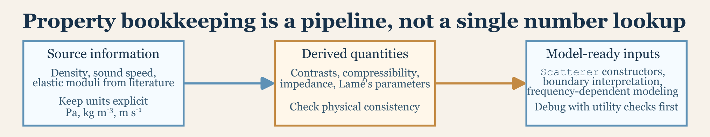

Preparing Material Properties
Source:vignettes/material-properties/material-properties.Rmd
material-properties.RmdIntroduction
Use this guide after choosing a target geometry and before building a scatterer. It covers how to record, convert, and check the material values that will be attached to the target. Constructor selection and object assembly are covered in Building Scatterers.
See Scattering Boundary Conditions for how material properties enter the interface conditions.

Record the source values
Record each value with its units, source, and measurement conditions. Density and sound speed can depend on temperature, salinity, pressure, and composition. In dispersive or lossy media, effective wave properties may also depend on frequency. A contrast copied from a publication is usable only when its reference medium is known (Medwin and Clay 1998).
See Notation and Symbols for the shared material-property definitions and units.
Convert units before constructing the scatterer. In particular, elastic moduli should be supplied in pascals and geometric dimensions should follow the units declared in the constructor call.
Make the reference medium explicit
Absolute target properties remain properties of the target, but their acoustic interpretation and all derived ratios depend on the exterior medium used in the calculation. Keep those medium values with the target setup, even when they are not arguments to the scatterer constructor:
library(acousticTS)
medium <- data.frame(
density = 1026,
sound_speed = 1500
)
body <- data.frame(
density = 1045,
sound_speed = 1520
)The same exterior density and sound speed should later be supplied to the scattering calculation. Otherwise, ratios derived during target preparation and properties completed during model evaluation can describe different physical systems.
Choose absolute properties or ratios
Fluid-like constructors commonly accept either absolute values such
as density_body and sound_speed_body or
directional ratios such as g_body and h_body.
For a body in the exterior medium, those ratios are g_{21}=\rho_2/\rho_1 and h_{21}=c_2/c_1.
Compute the ratios from the recorded absolute values when both are available:
g_body <- body$density / medium$density
h_body <- body$sound_speed / medium$sound_speed
data.frame(g_body, h_body)## g_body h_body
## 1 1.018519 1.013333Supply one representation for each property. Providing an absolute density and a contradictory density ratio does not describe a unique target. The same rule applies to sound speed.
Ratios and perturbation contrasts are also different quantities. The
package helpers rho() and compressibility()
calculate the density and compressibility perturbations used by
weak-scattering formulations:
data.frame(
gamma_rho = acousticTS::rho(medium, body),
gamma_kappa = compressibility(medium, body)
)## gamma_rho gamma_kappa
## 1 0.01818182 -0.04384916The ratios g_{21} and h_{21} approach one for a weak contrast. The perturbations \gamma_\rho and \gamma_\kappa approach zero. They should not be substituted for one another.
Check combined fluid properties
Density and sound speed should also be checked together. Acoustic impedance and absolute compressibility provide compact diagnostics for an interface:
property_check <- rbind(
exterior = medium,
body = body
)
property_check$impedance <-
property_check$density * property_check$sound_speed
property_check$compressibility_pa_inverse <-
1 / (property_check$density * property_check$sound_speed^2)
property_check## density sound_speed impedance compressibility_pa_inverse
## exterior 1026 1500 1539000 4.331817e-10
## body 1045 1520 1588400 4.141871e-10A density ratio close to one does not guarantee a small acoustic contrast if the sound speeds differ materially. Likewise, a gas component should not be treated as weakly contrasting merely because the chosen density value has not yet been checked against its sound speed.
Convert elastic properties
Elastic properties are reported in several equivalent
parameterizations. The package provides pois(),
bulk(), young(), shear(), and
lame() to convert between the common isotropic elastic
constants (Achenbach 1973).
For example, Young’s modulus and Poisson ratio can be converted before an elastic scatterer is built:
E <- 70e9
nu <- 0.32
density_solid <- 2700
G <- shear(E = E, nu = nu)
K <- bulk(E = E, nu = nu)
lambda <- lame(E = E, nu = nu)
c_L <- sqrt((lambda + 2 * G) / density_solid)
c_T <- sqrt(G / density_solid)
data.frame(E, nu, G, K, lambda, c_L, c_T)## E nu G K lambda c_L c_T
## 1 7e+10 0.32 26515151515 64814814815 47138047138 6090.927 3133.756Supply only the independent values intended for the conversion. Redundant and inconsistent elastic constants can hide which pair was actually used. For a stable isotropic linear-elastic material, check that K>0, G>0, and E>0 as applicable, and that -1<\nu<0.5 before construction. Lamé’s first parameter need not be positive for every stable auxetic material.
Different target classes expose different elastic inputs. An
elastic-shell constructor may accept a pair such as E and
nu, while a calibration sphere may be specified by density
and longitudinal and transverse wave speeds. Use the representation
supported by the intended constructor rather than converting values that
are already available in the required form.
Keep layered components separate
For a layered target, retain one labeled record per physical region. Do not collapse shell, core, viscous layer, and exterior values into an unlabeled set of generic properties.
| Region | Values to retain |
|---|---|
| exterior fluid | density and sound speed |
| fluid-like body or core | density and sound speed, or documented ratios |
| elastic solid or shell | density and an independent elastic parameter set |
| viscous layer | density, compressional sound speed, shear viscosity, and bulk viscosity when required |
The theoretical ratios between adjacent media can always be derived from these labeled absolute values. Constructor argument names may instead express a component relative to the exterior medium, so check the constructor documentation before supplying a precomputed ratio.
Build a constructor-ready target
Once the values are checked, attach them to a compatible shape. Absolute properties can be supplied directly:
body_shape <- prolate_spheroid(
length_body = 0.04,
radius_body = 0.004,
n_segments = 60
)
body_target <- fls_generate(
shape = body_shape,
density_body = body$density,
sound_speed_body = body$sound_speed
)
extract(body_target, "body")## $rpos
## [,1] [,2] [,3] [,4] [,5] [,6] [,7]
## x 0.04 0.039333333 0.038666667 0.03800000 0.037333333 0.036666667 0.0360
## y 0.00 0.000000000 0.000000000 0.00000000 0.000000000 0.000000000 0.0000
## z 0.00 0.000000000 0.000000000 0.00000000 0.000000000 0.000000000 0.0000
## zU 0.00 0.001024153 0.001436044 0.00174356 0.001995551 0.002211083 0.0024
## zL 0.00 -0.001024153 -0.001436044 -0.00174356 -0.001995551 -0.002211083 -0.0024
## [,8] [,9] [,10] [,11] [,12] [,13]
## x 0.035333333 0.034666667 0.034000000 0.033333333 0.032666667 0.0320
## y 0.000000000 0.000000000 0.000000000 0.000000000 0.000000000 0.0000
## z 0.000000000 0.000000000 0.000000000 0.000000000 0.000000000 0.0000
## zU 0.002568181 0.002719477 0.002856571 0.002981424 0.003095516 0.0032
## zL -0.002568181 -0.002719477 -0.002856571 -0.002981424 -0.003095516 -0.0032
## [,14] [,15] [,16] [,17] [,18]
## x 0.031333333 0.030666667 0.030000000 0.029333333 0.028666667
## y 0.000000000 0.000000000 0.000000000 0.000000000 0.000000000
## z 0.000000000 0.000000000 0.000000000 0.000000000 0.000000000
## zU 0.003295789 0.003383621 0.003464102 0.003537733 0.003604935
## zL -0.003295789 -0.003383621 -0.003464102 -0.003537733 -0.003604935
## [,19] [,20] [,21] [,22] [,23] [,24]
## x 0.028000000 0.02733333 0.026666667 0.026000000 0.025333333 0.024666667
## y 0.000000000 0.00000000 0.000000000 0.000000000 0.000000000 0.000000000
## z 0.000000000 0.00000000 0.000000000 0.000000000 0.000000000 0.000000000
## zU 0.003666061 0.00372141 0.003771236 0.003815757 0.003855155 0.003889587
## zL -0.003666061 -0.00372141 -0.003771236 -0.003815757 -0.003855155 -0.003889587
## [,25] [,26] [,27] [,28] [,29] [,30]
## x 0.024000000 0.023333333 0.022666667 0.02200000 0.021333333 0.020666667
## y 0.000000000 0.000000000 0.000000000 0.00000000 0.000000000 0.000000000
## z 0.000000000 0.000000000 0.000000000 0.00000000 0.000000000 0.000000000
## zU 0.003919184 0.003944053 0.003964285 0.00397995 0.003991101 0.003997777
## zL -0.003919184 -0.003944053 -0.003964285 -0.00397995 -0.003991101 -0.003997777
## [,31] [,32] [,33] [,34] [,35] [,36]
## x 0.020 0.019333333 0.018666667 0.01800000 0.017333333 0.016666667
## y 0.000 0.000000000 0.000000000 0.00000000 0.000000000 0.000000000
## z 0.000 0.000000000 0.000000000 0.00000000 0.000000000 0.000000000
## zU 0.004 0.003997777 0.003991101 0.00397995 0.003964285 0.003944053
## zL -0.004 -0.003997777 -0.003991101 -0.00397995 -0.003964285 -0.003944053
## [,37] [,38] [,39] [,40] [,41] [,42]
## x 0.016000000 0.015333333 0.014666667 0.014000000 0.013333333 0.01266667
## y 0.000000000 0.000000000 0.000000000 0.000000000 0.000000000 0.00000000
## z 0.000000000 0.000000000 0.000000000 0.000000000 0.000000000 0.00000000
## zU 0.003919184 0.003889587 0.003855155 0.003815757 0.003771236 0.00372141
## zL -0.003919184 -0.003889587 -0.003855155 -0.003815757 -0.003771236 -0.00372141
## [,43] [,44] [,45] [,46] [,47]
## x 0.012000000 0.011333333 0.010666667 0.010000000 0.009333333
## y 0.000000000 0.000000000 0.000000000 0.000000000 0.000000000
## z 0.000000000 0.000000000 0.000000000 0.000000000 0.000000000
## zU 0.003666061 0.003604935 0.003537733 0.003464102 0.003383621
## zL -0.003666061 -0.003604935 -0.003537733 -0.003464102 -0.003383621
## [,48] [,49] [,50] [,51] [,52] [,53]
## x 0.008666667 0.0080 0.007333333 0.006666667 0.006000000 0.005333333
## y 0.000000000 0.0000 0.000000000 0.000000000 0.000000000 0.000000000
## z 0.000000000 0.0000 0.000000000 0.000000000 0.000000000 0.000000000
## zU 0.003295789 0.0032 0.003095516 0.002981424 0.002856571 0.002719477
## zL -0.003295789 -0.0032 -0.003095516 -0.002981424 -0.002856571 -0.002719477
## [,54] [,55] [,56] [,57] [,58] [,59]
## x 0.004666667 0.0040 0.003333333 0.002666667 0.00200000 0.001333333
## y 0.000000000 0.0000 0.000000000 0.000000000 0.00000000 0.000000000
## z 0.000000000 0.0000 0.000000000 0.000000000 0.00000000 0.000000000
## zU 0.002568181 0.0024 0.002211083 0.001995551 0.00174356 0.001436044
## zL -0.002568181 -0.0024 -0.002211083 -0.001995551 -0.00174356 -0.001436044
## [,60] [,61]
## x 0.0006666667 0
## y 0.0000000000 0
## z 0.0000000000 0
## zU 0.0010241528 0
## zL -0.0010241528 0
##
## $radius
## [1] 0.000000000 0.001024153 0.001436044 0.001743560 0.001995551 0.002211083
## [7] 0.002400000 0.002568181 0.002719477 0.002856571 0.002981424 0.003095516
## [13] 0.003200000 0.003295789 0.003383621 0.003464102 0.003537733 0.003604935
## [19] 0.003666061 0.003721410 0.003771236 0.003815757 0.003855155 0.003889587
## [25] 0.003919184 0.003944053 0.003964285 0.003979950 0.003991101 0.003997777
## [31] 0.004000000 0.003997777 0.003991101 0.003979950 0.003964285 0.003944053
## [37] 0.003919184 0.003889587 0.003855155 0.003815757 0.003771236 0.003721410
## [43] 0.003666061 0.003604935 0.003537733 0.003464102 0.003383621 0.003295789
## [49] 0.003200000 0.003095516 0.002981424 0.002856571 0.002719477 0.002568181
## [55] 0.002400000 0.002211083 0.001995551 0.001743560 0.001436044 0.001024153
## [61] 0.000000000
##
## $theta
## [1] 1.570796
##
## $g
## NULL
##
## $h
## NULL
##
## $density
## [1] 1045
##
## $sound_speed
## [1] 1520
##
## $radius_curvature_ratio
## NULLThe same shape can instead be constructed from ratios derived against the recorded exterior medium:
body_target_ratios <- fls_generate(
shape = body_shape,
g_body = g_body,
h_body = h_body
)
extract(body_target_ratios, "body")## $rpos
## [,1] [,2] [,3] [,4] [,5] [,6] [,7]
## x 0.04 0.039333333 0.038666667 0.03800000 0.037333333 0.036666667 0.0360
## y 0.00 0.000000000 0.000000000 0.00000000 0.000000000 0.000000000 0.0000
## z 0.00 0.000000000 0.000000000 0.00000000 0.000000000 0.000000000 0.0000
## zU 0.00 0.001024153 0.001436044 0.00174356 0.001995551 0.002211083 0.0024
## zL 0.00 -0.001024153 -0.001436044 -0.00174356 -0.001995551 -0.002211083 -0.0024
## [,8] [,9] [,10] [,11] [,12] [,13]
## x 0.035333333 0.034666667 0.034000000 0.033333333 0.032666667 0.0320
## y 0.000000000 0.000000000 0.000000000 0.000000000 0.000000000 0.0000
## z 0.000000000 0.000000000 0.000000000 0.000000000 0.000000000 0.0000
## zU 0.002568181 0.002719477 0.002856571 0.002981424 0.003095516 0.0032
## zL -0.002568181 -0.002719477 -0.002856571 -0.002981424 -0.003095516 -0.0032
## [,14] [,15] [,16] [,17] [,18]
## x 0.031333333 0.030666667 0.030000000 0.029333333 0.028666667
## y 0.000000000 0.000000000 0.000000000 0.000000000 0.000000000
## z 0.000000000 0.000000000 0.000000000 0.000000000 0.000000000
## zU 0.003295789 0.003383621 0.003464102 0.003537733 0.003604935
## zL -0.003295789 -0.003383621 -0.003464102 -0.003537733 -0.003604935
## [,19] [,20] [,21] [,22] [,23] [,24]
## x 0.028000000 0.02733333 0.026666667 0.026000000 0.025333333 0.024666667
## y 0.000000000 0.00000000 0.000000000 0.000000000 0.000000000 0.000000000
## z 0.000000000 0.00000000 0.000000000 0.000000000 0.000000000 0.000000000
## zU 0.003666061 0.00372141 0.003771236 0.003815757 0.003855155 0.003889587
## zL -0.003666061 -0.00372141 -0.003771236 -0.003815757 -0.003855155 -0.003889587
## [,25] [,26] [,27] [,28] [,29] [,30]
## x 0.024000000 0.023333333 0.022666667 0.02200000 0.021333333 0.020666667
## y 0.000000000 0.000000000 0.000000000 0.00000000 0.000000000 0.000000000
## z 0.000000000 0.000000000 0.000000000 0.00000000 0.000000000 0.000000000
## zU 0.003919184 0.003944053 0.003964285 0.00397995 0.003991101 0.003997777
## zL -0.003919184 -0.003944053 -0.003964285 -0.00397995 -0.003991101 -0.003997777
## [,31] [,32] [,33] [,34] [,35] [,36]
## x 0.020 0.019333333 0.018666667 0.01800000 0.017333333 0.016666667
## y 0.000 0.000000000 0.000000000 0.00000000 0.000000000 0.000000000
## z 0.000 0.000000000 0.000000000 0.00000000 0.000000000 0.000000000
## zU 0.004 0.003997777 0.003991101 0.00397995 0.003964285 0.003944053
## zL -0.004 -0.003997777 -0.003991101 -0.00397995 -0.003964285 -0.003944053
## [,37] [,38] [,39] [,40] [,41] [,42]
## x 0.016000000 0.015333333 0.014666667 0.014000000 0.013333333 0.01266667
## y 0.000000000 0.000000000 0.000000000 0.000000000 0.000000000 0.00000000
## z 0.000000000 0.000000000 0.000000000 0.000000000 0.000000000 0.00000000
## zU 0.003919184 0.003889587 0.003855155 0.003815757 0.003771236 0.00372141
## zL -0.003919184 -0.003889587 -0.003855155 -0.003815757 -0.003771236 -0.00372141
## [,43] [,44] [,45] [,46] [,47]
## x 0.012000000 0.011333333 0.010666667 0.010000000 0.009333333
## y 0.000000000 0.000000000 0.000000000 0.000000000 0.000000000
## z 0.000000000 0.000000000 0.000000000 0.000000000 0.000000000
## zU 0.003666061 0.003604935 0.003537733 0.003464102 0.003383621
## zL -0.003666061 -0.003604935 -0.003537733 -0.003464102 -0.003383621
## [,48] [,49] [,50] [,51] [,52] [,53]
## x 0.008666667 0.0080 0.007333333 0.006666667 0.006000000 0.005333333
## y 0.000000000 0.0000 0.000000000 0.000000000 0.000000000 0.000000000
## z 0.000000000 0.0000 0.000000000 0.000000000 0.000000000 0.000000000
## zU 0.003295789 0.0032 0.003095516 0.002981424 0.002856571 0.002719477
## zL -0.003295789 -0.0032 -0.003095516 -0.002981424 -0.002856571 -0.002719477
## [,54] [,55] [,56] [,57] [,58] [,59]
## x 0.004666667 0.0040 0.003333333 0.002666667 0.00200000 0.001333333
## y 0.000000000 0.0000 0.000000000 0.000000000 0.00000000 0.000000000
## z 0.000000000 0.0000 0.000000000 0.000000000 0.00000000 0.000000000
## zU 0.002568181 0.0024 0.002211083 0.001995551 0.00174356 0.001436044
## zL -0.002568181 -0.0024 -0.002211083 -0.001995551 -0.00174356 -0.001436044
## [,60] [,61]
## x 0.0006666667 0
## y 0.0000000000 0
## z 0.0000000000 0
## zU 0.0010241528 0
## zL -0.0010241528 0
##
## $radius
## [1] 0.000000000 0.001024153 0.001436044 0.001743560 0.001995551 0.002211083
## [7] 0.002400000 0.002568181 0.002719477 0.002856571 0.002981424 0.003095516
## [13] 0.003200000 0.003295789 0.003383621 0.003464102 0.003537733 0.003604935
## [19] 0.003666061 0.003721410 0.003771236 0.003815757 0.003855155 0.003889587
## [25] 0.003919184 0.003944053 0.003964285 0.003979950 0.003991101 0.003997777
## [31] 0.004000000 0.003997777 0.003991101 0.003979950 0.003964285 0.003944053
## [37] 0.003919184 0.003889587 0.003855155 0.003815757 0.003771236 0.003721410
## [43] 0.003666061 0.003604935 0.003537733 0.003464102 0.003383621 0.003295789
## [49] 0.003200000 0.003095516 0.002981424 0.002856571 0.002719477 0.002568181
## [55] 0.002400000 0.002211083 0.001995551 0.001743560 0.001436044 0.001024153
## [61] 0.000000000
##
## $theta
## [1] 1.570796
##
## $g
## [1] 1.018519
##
## $h
## [1] 1.013333
##
## $density
## NULL
##
## $sound_speed
## NULL
##
## $radius_curvature_ratio
## NULLThese objects describe the same material only when the later model
run uses the exterior values stored in medium.
Validation checklist
Before moving to scatterer construction or model evaluation, confirm that:
- every dimensional value has been converted to the units expected by the package,
- the exterior medium used to derive ratios is recorded,
- absolute values and ratios do not contradict one another,
- g and h ratios have not been confused with perturbation contrasts,
- each region of a layered target has its own labeled property set,
- elastic constants form a physically admissible independent set, and
- frequency-dependent or complex properties have not been replaced silently by unrelated static values.
Next step
Continue to Building Scatterers to select the target class and attach these values to the geometry.